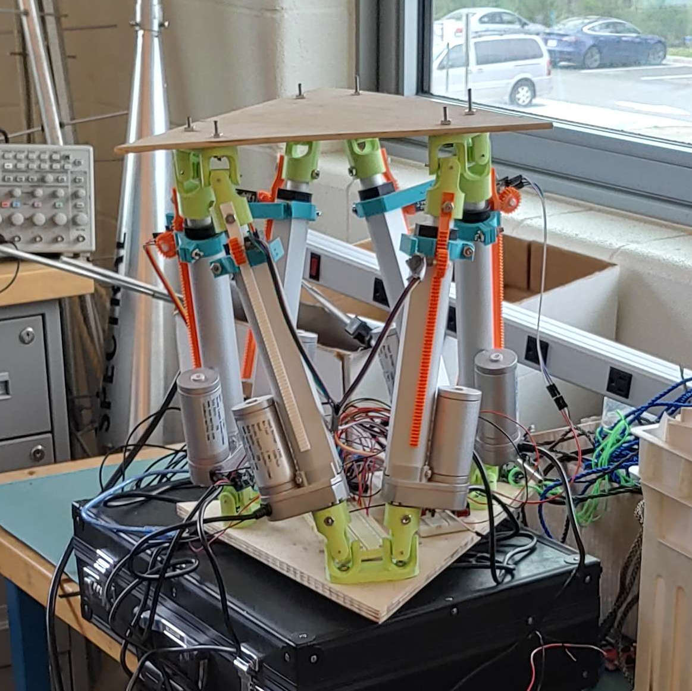

This project starts in my senior year of high school, where I had a robotics
class that was not particularly engaging but had a free-for-all final group
project where we collectively decided as a group to attempt to make a Stewart
platform. Our result wasn't great and I recall that we really only had it go up
and down for our final hardware demo as a trivial motion control case. What
really matters though is that we all learned a lot, it was my first real foray
into having to deal with real-world hardware, and most importantly got me hooked
on the idea of parallel motion systems.
Below is what the hardware actually looks like, picture taken by my sibling
years after I graduated because they also had some interest in making it work.
Big note is that most of this mechanical design wasn't mine, even
though I certainly contributed some ideas. I thought it was a better use of my
time to explore parts of the project I didn't fully understand as much, and
while I absolutely could have designed the mechanical portions, attempting to
control the device was a more interesting challange. This is not to say I did
not contribute to the mechanical design--I came up with the rack-and-pinion on
each linear motor to measure each's extension. The idea was movement of the
linear motor would increment a rotary encoder, and this did actually work in
initial testing with remarkable precision, but quickly ran into issues that in
retrospect are quite obvious. This replaced a neat DIY linear potentiometer
that we had tried at first, but that solution saw severe hysteresis issues and
drifting. While in retrospect purchasing a sensor was the correct way to go, we
also simply did not have the time.

The rack-and-pinion as mentioned quickly had issues, specifically when we
needed to measure six linear motors rather than one. In the 1D case where
motion planning is trivial, really all the MCU is doing is counting pulses from
the single rotary encoder--simple enough. More than one motor though, despite
the linear stages being blisteringly slow, the combined pulse-rate from all six
rotary encoders would bog down the MCU with interrupts faster than the poor AVR
core could catch, even though the interrupt routine was at best three lines.
Present me knows that with really anything better than the Arduino I was
permitted, having access to a timer to count the quadrature signals would had
trivialized the state detection but alas it was not to be. Also not using a
bodgey method of measuring position would have just as good.
To further complicate the interrupt issue was my portion of the project, math.
At the time I had already finished Calc 3 and was in differential equations,
although in honesty I wasn't doing too well with hybrid pandemic instruction.
While I was able to design a primitive control system that would calculate how
fast to run each motor and how to correct for deviations using a proportional-
controller, it turned out that the formulation I came up was horribly limited
by my available computational power. The math I needed to run on the Arduino
was 32-bit floating point, and it turns out that AVRs don't have a floating
point core. Every square-root I needed incurred a ~500 clock penalty, and every
new calculation step would require dozens of square roots. Once the arithmatic
steps were included, the total time for a single step of the control system to
solve would be much of a second.
At this point though, I graduated high school and my thoughts were no longer of
the Stewart Platform.